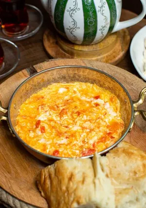

Lahsa

Description
Ingredients
- 6 بيض
- 4 ملاعق جبن سائل الكمية بحسب رغبتك ممكن
- 3 حبات طماطم مفروم
- 1 بصل مفروم
- 1 ملعقة معجون طماطم
- رشة كمون
- رشة فلفل أسود
- ملح بحسب الرغبة
Steps
- نفروم البصل و الطماطم، نحط قلاية على النار مع الزبدة ونقلي البصل ونتركه لحين يذبل
- نحط الطماطم مع المعجون الطماطم ونحرك حتى تنشف ماء الطماطم. نرش الكمون والبابريكا
- ننخفق البيض ونحطه على الطماطم ونحرك.
- نضع الجبن الكريمي على البيض وبعدها نقدم اللحسة ساخنة.
home